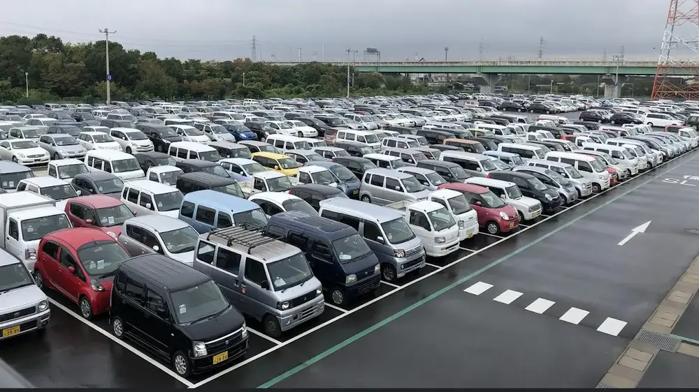

北海道から沖縄まで
日本全国から買取車・トラック・重機・農機

埼玉県伊奈町を拠点に、全国の車両と機械を買取しています。
遠方でも、写真を送るだけで
査定します。
引取り方法と費用は、査定時にご案内します。
埼玉県内は引取り無料です。
日本全国対応写真で無料査定抹消登録 無料代行解体費用 無料遠方は銀行振込
全国から買取している品目
対応エリア
北海道・東北
北海道・青森県・岩手県・宮城県・秋田県・山形県・福島県
関東
茨城県・栃木県・群馬県・埼玉県・千葉県・東京都・神奈川県
中部
新潟県・富山県・石川県・福井県・山梨県・長野県・岐阜県・静岡県・愛知県
近畿
三重県・滋賀県・京都府・大阪府・兵庫県・奈良県・和歌山県
中国・四国
鳥取県・島根県・岡山県・広島県・山口県・徳島県・香川県・愛媛県・高知県
九州・沖縄
福岡県・佐賀県・長崎県・熊本県・大分県・宮崎県・鹿児島県・沖縄県
※離島はご相談ください。
遠方でも値段がつく理由
EXPORT ZONEは、買い取った車両や機械を自社で海外へ輸出しています。日本の車やトラック、重機、農機具は丈夫で長く使えるため、海外では古いものでも需要があります。そのため、お住まいの地域で値段がつかなかった車両でも、査定額をご提示できることがあります。
遠方からの買取の流れ
- 写真と情報を送る
LINEかメールで、全体の写真、車検証（機械は銘板）、所在地をお送りください。 - 査定額と引取り方法のご案内
買取金額と、引取りの方法・費用・日程をご案内します。 - 引取り
ご納得いただけたら、日程に合わせて引取りに伺います。 - 手続きとお支払い
抹消登録は当社が無料で代行します。遠方の場合のお支払いは銀行振込です。
よくあるご質問
埼玉県以外からでも買取してもらえますか？
はい。乗用車・廃車、トラック・バス、重機・建設機械、フォークリフト、農機具を日本全国から買取しています。まずは写真と所在地をお知らせください。
遠方の場合、引取り費用はかかりますか？
埼玉県内は引取り無料です。その他の地域は、車両の種類や所在地によって引取り方法が変わるため、査定時に金額と合わせてご案内します。
遠方でも現地を見ずに査定できますか？
はい。LINEやメールで写真と車検証（機械の場合は銘板）の情報を送っていただければ、写真で査定します。
廃車の手続きは遠方でも代行してもらえますか？
はい。抹消登録は全国どこのお車でも当社が無料で代行します。必要な書類とやり取りの方法は個別にご案内します。
離島や沖縄でも対応できますか？
ご相談ください。所在地と車両の内容を確認したうえで、対応できる方法をご案内します。
お支払い方法は？
埼玉県内のお引取りは、引取り当日に現金でお支払いします。遠方の場合は、銀行振込でお支払いします。